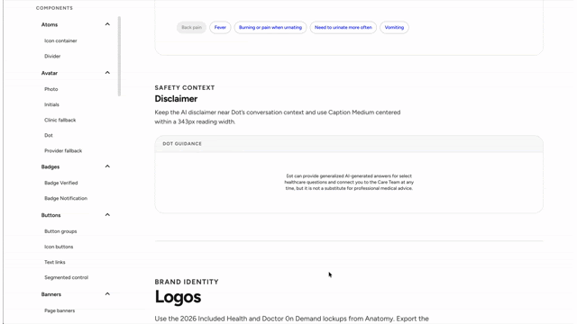

How do we keep a design system consistent and fast enough for both people and agents to build with?

Creating and maintaining components takes constant care. My role was to give designers and developers a system they could trust — so they could build consistent, high-quality products and ship quickly.
"Establish consistency, increase quality, and improve speed of development."
Organized our design tokens, base components and complex components into a library that humans and agents can both interpret.
With expert prototypers and developers, built an environment where design and product partners create real-looking prototypes by prompting or vibe coding.
Aligned web, iOS and Android to a shared component library and brought all three to full accessibility compliance.
Web, iOS and Android all brought up to full accessibility compliance.
A shared component library across web, iOS and Android.
Design and product partners prototype with real components, not mockups.
The Dot Platform — a multi-agent AI healthcare assistant built on these foundations.
See the Dot Platform →